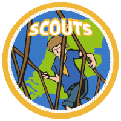

Scouting Phoenix Tiel
- Vol Vuur Vooruit -

Ben jij tussen de 11 en 15 jaar en heb je zin in actie? Word lid bij één van de 1.000 Scoutinggroepen en beleef uitdagende avonturen bij de scouts! Samen met je nieuwe vrienden doe je super gave dingen waar je ook nog eens wat van leert. Leer zeilen, ga op zomerkamp, kook op je eigen kampvuurtje en ontdek de wereld om je heen!
De scouts van 11 tot en met 15 jaar heten 'scouts'. Scouts zijn niet meer bezig met het spelen in thema, zoals bij de bevers (5-7 jaar) en de welpen (7-11) jaar het geval is. Bij de scouts ligt de focus op het bewust ontwikkelen van hun Scoutingkennis en -vaardigheden. In de Scoutsgids maken scouts kennis met zeven jongeren die samen in een ploeg zitten en met wie zij zich kunnen identificeren. Zeger, Marloes, Mick, Radboud, Naomi, Tess en Jesper hebben allemaal hun eigen interesses en karaktereigenschappen. De verschillende activiteitengebieden (verzamelingen van activiteiten die qua onderwerp bij elkaar horen) zorgen ervoor dat er veel variatie in het programma zit en kinderen elke week iets anders doen.
Naast samenwerking en elkaar helpen als er problemen zijn, is het ook belangrijk dat scouts (een deel van) een opkomst leren organiseren. Deze groep scouts wordt op deze manier relatief zelfstandig en de scouts worden voorbereid op de volgende speltak, de explorers, waarin ze zelf activiteiten gaan organiseren. Zo blijven scouts zich steeds verder ontwikkelen, dit heet bij Scouting de 'doorlopende leerlijn'. Lees meer over wat Scouting is.
Binnen onze vereniging hebben de Scouts elke week op zaterdag opkomst.
Er zijn twee groepen; een jongens en een gemengde groep:
Wil je een keer komen kijken? Neem contact op via het Scout worden formulier!
Neem contact op